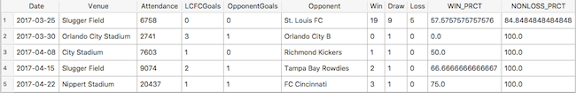

Louisville City FC Attendance Analysis
Data Sorting
First, I gathered the match results of Louisville City Football Club for the 2017 season and the first half of the 2018 season (up to June 16th) into an Excel document. The data includes the date of the match, the venue where it was played, the attendance of the match, the number of goals scored by Louisville City, the goals scored against Louisville City, their match opponent, and the cumulative win/draw/loss record up to the match. Note: To avoid 0% outliers on my data for the season openers, I used the entire record of the previous season.
Next I converted this Excel file to CSV file to CSV and imported it into SQLite.
Then, using this SQL code:

I was able to insert columns with the win and non-loss percentages.
Using SQL CREATE commands:

I created the two tables I was going to work with.

Using SQLite, I exported these two tables as CSV files. In the next step, I will import these two CSV into a Jupyter notebook to create graphs using this data.